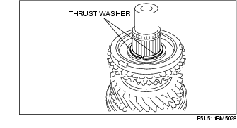
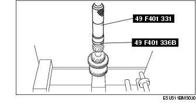
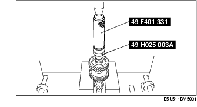

P66M-D [MT WM] ➭ TRANSMISSION/TRANSAXLE ➭ MANUAL TRANSMISSION ➭ 1ST/2ND GEAR COMPONENT, 5TH/6TH GEAR COMPONENT AND COUNTERSHAFT ASSEMBLY
1ST/2ND GEAR COMPONENT, 5TH/6TH GEAR COMPONENT AND COUNTERSHAFT ASSEMBLY
D5E051117040M01
{: #wp1058564}
- Assemble in the order indicated in the table.
|
Mainshaft {: #wp1058605} |
|
|---|---|
|
2 {: #wp1058629} |
Needle bearing {: #wp1058632} |
|
3 {: #wp1058636} |
2nd gear {: #wp1058639} |
|
4 {: #wp1058673} |
Friction damper {: #wp1058676} |
|
5 {: #wp1058690} |
Inner cone {: #wp1058693} |
|
6 {: #wp1058707} |
Double cone {: #wp1058710} |
|
7 {: #wp1058724} |
Synchronizer ring {: #wp1058727} |
|
8 {: #wp1058741} |
1st/2nd clutch hub {: #wp1058744} (See 1st/2nd Clutch Hub Component Assembly Note.) {: #wp1058762} |
|
9 {: #wp1058774} |
Synchronizer key spring {: #wp1058777} |
|
10 {: #wp1058793} |
Synchronizer key {: #wp1058796} |
|
11 {: #wp1058812} |
Clutch hub sleeve {: #wp1058815} |
|
12 {: #wp1058831} |
Synchronizer ring {: #wp1058834} |
|
13 {: #wp1058850} |
Double cone {: #wp1058853} |
|
14 {: #wp1058869} |
Inner cone {: #wp1058872} |
|
15 {: #wp1058888} |
1st gear {: #wp1058891} |
|
16 {: #wp1058907} |
Needle bearing {: #wp1058910} |
|
17 {: #wp1058926} |
Needle bearing race {: #wp1058929} |
|
18 {: #wp1058945} |
Mainshaft center bearing {: #wp1058948} (See 1st/2nd Clutch Hub Component Assembly Note.) {: #wp1058966} |
|
19 {: #wp1058978} |
Needle bearing {: #wp1058981} |
|
20 {: #wp1058999} |
6th gear {: #wp1059002} |
|
21 {: #wp1059020} |
Synchronizer ring {: #wp1059023} |
|
22 {: #wp1059041} |
Thrust washer {: #wp1059044} |
|
23 {: #wp1059062} |
Clutch hub {: #wp1059065} (See 5th/6th Clutch Hub Component Assembly Note.) {: #wp1059085} |
|
24 {: #wp1059097} |
Synchronizer key {: #wp1059100} (See 5th/6th Clutch Hub Component Assembly Note.) {: #wp1059122} |
|
25 {: #wp1059134} |
Synchronizer key spring {: #wp1059137} (See 5th/6th Clutch Hub Component Assembly Note.) {: #wp1059161} |
|
26 {: #wp1059173} |
Clutch hub sleeve {: #wp1059176} (See 5th/6th Clutch Hub Component Assembly Note.) {: #wp1059202} |
|
27 {: #wp1059214} |
Synchronizer ring {: #wp1059217} |
|
28 {: #wp1059243} |
Needle bearing {: #wp1059246} |
|
29 {: #wp1059272} |
Retaining ring {: #wp1059275} (See 5th/6th Clutch Hub Component Assembly Note.) {: #wp1059303} |
|
30 {: #wp1059315} |
Maindrive gear {: #wp1059318} |
|
31 {: #wp1059346} |
Maindrive gear shaft bearing {: #wp1059349} (See Maindrive Gear Shaft Bearing Assembly Note.) {: #wp1059379} |
|
32 {: #wp1059391} |
Scoop ring {: #wp1059394} |
|
33 {: #wp1059424} |
Needle bearing {: #wp1059427} |
|
34 {: #wp1059457} |
Countershaft {: #wp1059460} |
|
35 {: #wp1059490} |
Countershaft center bearing race {: #wp1059493} (See Countershaft Center Bearing Race Assembly Note.) {: #wp1059525} |
|
36 {: #wp1059537} |
Countershaft front bearing race {: #wp1059540} (See Countershaft Front Bearing Race Assembly Note.) {: #wp1059574} |
1st/2nd Clutch Hub Component Assembly Note
Caution
• Be sure to assemble the clutch hub components and synchronizer ring components while aligning the synchronizer ring grooves with the synchronizer keys.
{: #wp1062329}• The standard synchronizer key dimensions are as follows:
mm {in}
|
A {: #wp1059820} |
B {: #wp1059822} |
C {: #wp1059824} |
|
|---|---|---|---|
|
1st/2nd {: #wp1059712} |
17.0 {0.670} {: #wp1059714} |
4.7 {0.185} {: #wp1059770} |
5.0 {0.197} {: #wp1059773} |
{: #wp1059701}
• Be sure to align the synchronizer ring projections with the inner cone notches. {: #wp1059951}• Be sure to assemble the gears and the synchronizer ring components while aligning the double cone projections with the gear holes as shown in the figure. {: #wp1059965}• Align the friction damper projections with the clutch hub grooves. (2nd gear)
• Align the clutch hub sleeve alignment mark with the clutch hub synchronizer key installation position and assemble.
- Using a SST and press, assemble the needle bearing, 2nd gear, synchronizer ring component (2nd), 1st/2nd clutch hub component, synchronizer ring component (1st), 1st gear, needle bearing, needle bearing race and mainshaft center bearing to the mainshaft at the same time.{: #wp1060047}
Caution
• When using a press, be careful not to damage the parts.
5th/6th Clutch Hub Component Assembly Note
- Place the thrust washers onto the 6th gear.{: #wp1060115}

*Note*{: #wp1060152}
• Apply petroleum jelly making sure the thrust washer does not deviate.
- Assemble the 5th/6th clutch hub component.
Caution
• The standard synchronizer key dimensions are as follows:

mm {in}
|
A {: #wp1060336} |
B {: #wp1060338} |
C {: #wp1060340} |
|
|---|---|---|---|
|
5th/6th {: #wp1060228} |
17.0 {0.670} {: #wp1060230} |
4.25 {0.167} {: #wp1060286} |
5.0 {0.197} {: #wp1060289} |
{: #wp1060217}
• Align the clutch hub sleeve alignment mark with the clutch hub synchronizer key installation position and assemble.

-
Install the 5th/6th clutch hub component to the mainshaft.
-
Install the retaining ring.
-
Measure the clearance between retaining ring and groove of the mainshaft.{: #wp1060520}
• If not within the specification, adjust by choosing the proper retaining ring.
5th/6th clutch hub end play
0-0.05 mm {0-0.0019 in}
**5th/6th clutch hub retaining ring
+----------------------------------------+ | Thickness (mm {in}) {: #wp1060708} | +========================================+ | 1.50 {0.0591} {: #wp1060677} | +----------------------------------------+ | 1.55 {0.0610} {: #wp1060719} | +----------------------------------------+ | 1.60 {0.0630} {: #wp1060748} | +----------------------------------------+ | 1.65 {0.0650} {: #wp1060760} | +----------------------------------------+ | 1.70 {0.0669} {: #wp1060772} | +----------------------------------------+ | 1.75 {0.0689} {: #wp1060784} | +----------------------------------------+ | 1.80 {0.0709} {: #wp1060796} | +----------------------------------------+ | 1.85 {0.0728} {: #wp1060808} | +----------------------------------------+ | 1.90 {0.0748} {: #wp1060820} | +----------------------------------------+ | 1.95 {0.0768} {: #wp1060832} | +----------------------------------------+**{: #wp1060604}
Maindrive Gear Shaft Bearing Assembly Note
- Assemble the maindrive gear shaft bearing using the SSTs.{: #wp1060856}
Countershaft Center Bearing Race Assembly Note
- Assemble the countershaft center bearing race using the SSTs.{: #wp1060902}

Countershaft Front Bearing Race Assembly Note
- Assemble the countershaft front bearing race using the SSTs.{: #wp1060948}
